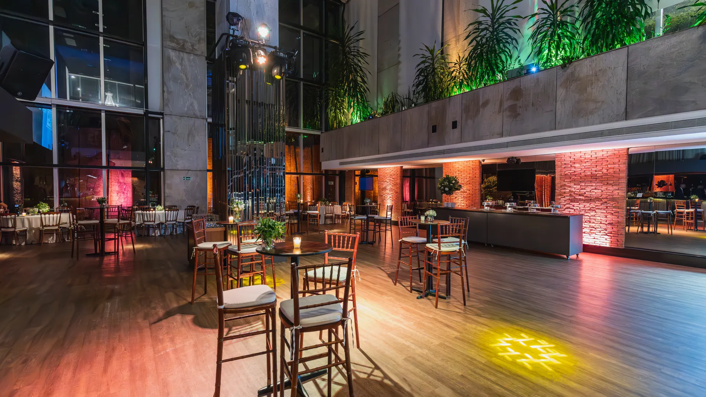
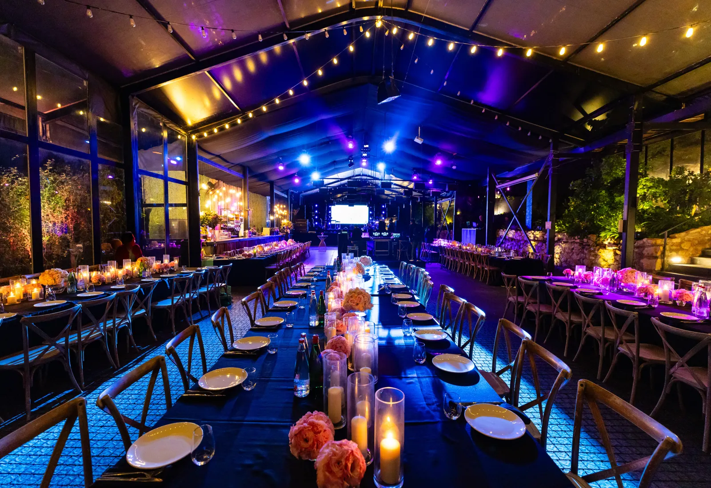

Eventos corporativos
CaramelD'Âme
Dirección y planeamiento de eventos corporativos, de la idea al último invitado.
Lanzamientos, convenciones, aniversarios y premiaciones. Una sola dirección responsable de que todo pase cuando tiene que pasar.

El criterio
Un evento corporativo no se arma: se dirige.
Contratar proveedores sueltos y coordinarlos por grupo de WhatsApp es lo habitual. Dirigir es otra cosa: decidir qué tiene que sentir la gente en cada tramo de la noche, y sostener esa decisión cuando algo se corre de horario.
-
Una sola interlocutora
No hay que perseguir a cinco proveedores ni explicar el evento cinco veces. Se habla con la dirección, y la dirección habla con todos los demás.
-
La corrida, escrita antes
Cada evento se entrega con su minuto a minuto: quién habla, cuándo baja la luz, cuándo sale la comida, quién avisa qué. Nada queda librado a que alguien se acuerde.
-
El plan B, también escrito
Si llueve, si el orador llega tarde, si el catering se demora. La diferencia entre un imprevisto y un problema es tener resuelto de antemano qué pasa si.
Qué dirigimos
Cuatro formatos, cuatro objetivos distintos.
Cada uno se piensa desde lo que la empresa necesita que pase, no desde el salón disponible.
-
Lanzamientos de producto
El objetivo es que se entienda el producto y quede una imagen. Guion, puesta, tiempos de prensa y el momento exacto en que aparece lo que se está lanzando.
-
Convenciones y kick-offs
Jornadas largas donde la energía se cae sola. Se dirige el ritmo: bloques cortos, cortes bien puestos, y una dinámica que hace que la gente vuelva del café.
-
Aniversarios y fiestas de fin de año
Acá el objetivo es que el equipo la pase bien de verdad. Es donde más pesa el oficio de los eventos sociales: la gente se relaja o no según cómo esté armada la noche.
-
Premiaciones y galas
Formato exigente: hay protocolo, hay orden de mérito y hay gente esperando su nombre. Se dirige para que cada reconocimiento tenga su momento y ninguno se diluya.
El minuto a minuto
Así se ve una corrida dirigida.
Elegí un formato y recorré las horas. En cada una: qué pasa en escena, qué está haciendo la dirección y qué se lleva el invitado.
Prefiero ver los serviciosEl punto justo
El caramelo y un evento se arruinan igual: por un minuto de más sobre el fuego.
Un discurso que dura tres minutos de más, un brindis que llega cuando la gente ya se sentó, una pausa que se estira: nada de eso se ve en el presupuesto y es exactamente lo que decide si el evento se recuerda.
Por eso el trabajo empieza mucho antes del día del evento, y el día del evento consiste, sobre todo, en sostener lo que ya estaba decidido.
De dónde viene
Años de eventos sociales, aplicados a la agenda corporativa.

La mayoría de las agencias corporativas nunca dirigió un casamiento. Se nota: los eventos salen prolijos y fríos.
El oficio social enseña algo que la logística no cubre — cómo se mueve una sala, en qué momento la gente deja de mirar el celular, cuánto dura la atención de alguien parado con una copa en la mano. Eso es lo que Caramel D'Âme trae a la mesa corporativa.
La transición está en marcha y es deliberada: mismo oficio, otro tipo de encargo, y una propuesta que no se parece a la de una agencia de logística.
- Dirección y planeamiento integral, no coordinación de proveedores
- Corrida escrita y plan B cerrado antes del día del evento
- Presencia en el evento, de principio a fin
Cómo trabajamos
Cuatro instancias, y el día del evento es la más tranquila.
-
Brief
Qué necesita que pase la empresa, para quién es, con qué presupuesto y qué salió mal la última vez. De acá sale el objetivo del evento, que no siempre es el que estaba escrito.
-
Propuesta y presupuesto
Concepto, formato, venue, proveedores y una estimación abierta por rubro. Se aprueba antes de mover nada.
-
Producción
Contrataciones, visitas técnicas, permisos y la corrida escrita con todos los responsables. Reportes de avance, sin que haya que pedirlos.
-
El día
Dirección en piso de punta a punta. Si algo se corre, se ajusta sin que el invitado lo note — y sin que nadie de la empresa tenga que resolverlo.
Preguntas
Lo que se pregunta antes del primer brief.
¿Trabajan con los proveedores de la empresa o traen los suyos?
Las dos formas. Si la empresa ya tiene catering, salón o productora, se trabaja con ellos y la dirección los integra a la corrida. Si no, se propone una selección y se explica por qué cada uno.
¿Con cuánta anticipación hay que empezar?
Depende del formato y de la cantidad de invitados. Un evento chico se puede resolver en semanas; una convención o una fiesta de fin de año conviene arrancarla con varios meses, sobre todo por la disponibilidad de salones. Escribí con la fecha en mente y te decimos si llegamos.
¿Se puede contratar solo la dirección en el día del evento?
Sí, aunque rinde menos. Dirigir sin haber participado del planeamiento significa sostener decisiones que uno no tomó. Cuando el evento ya está armado, igual se puede entrar a escribir la corrida y coordinar el día.
¿Cómo se cobra?
Los honorarios de dirección y planeamiento se presupuestan por evento, según formato, cantidad de invitados y alcance. Van separados del costo de los proveedores, que se presenta abierto para que la empresa vea en qué se va cada peso.
¿Hacen eventos fuera de Buenos Aires?
Sí. La producción a distancia se maneja igual, con visitas técnicas presenciales antes del evento y dirección en piso el día. Consultá por la zona y lo evaluamos.
Contacto
Contame qué evento tenés en la cabeza.
Con la fecha estimada, la cantidad de invitados y qué necesitás que pase alcanza para empezar a conversar.
WhatsApp directo+54 9 11 5664-1312